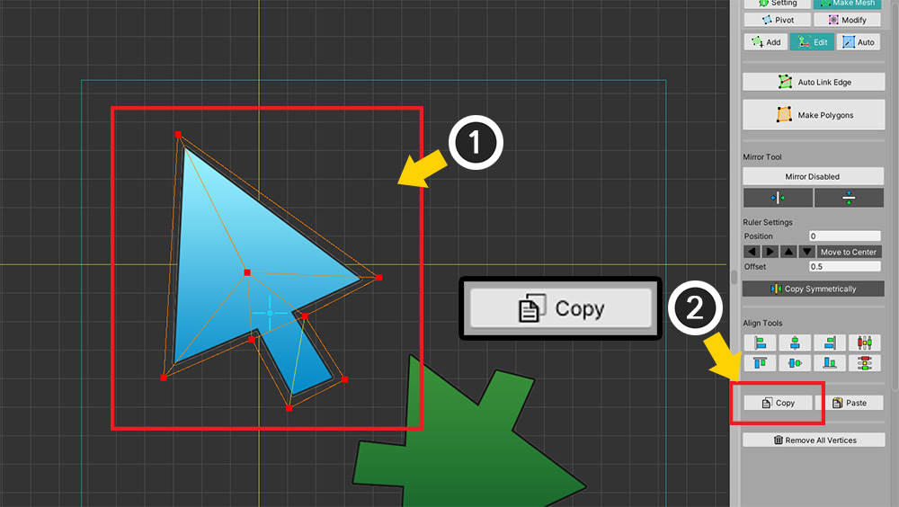
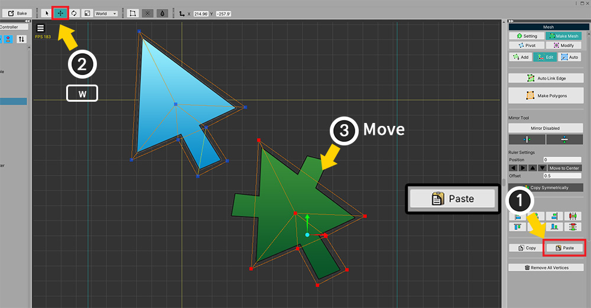
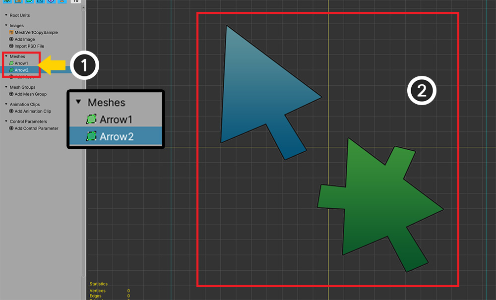
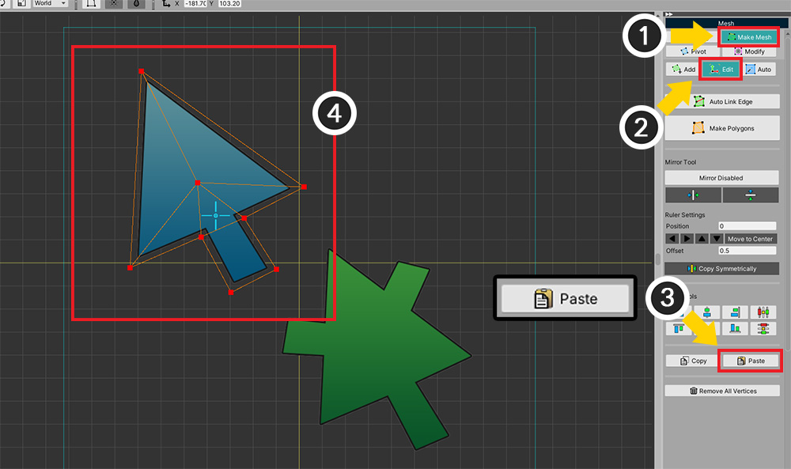
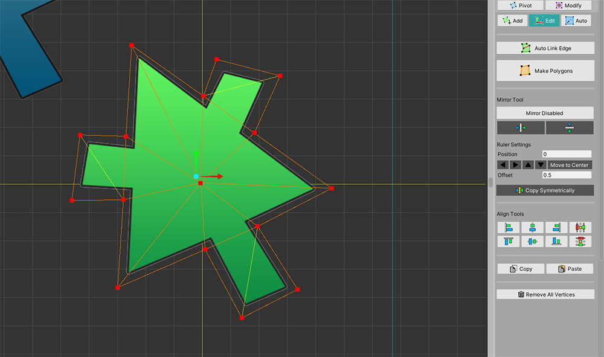

AnyPortrait > 메뉴얼 > 버텍스 복사하기
버텍스 복사하기
1.3.4
이미지 아틀라스(Atlas) 내에 유사한 이미지가 2개 이상 존재할 때, 메시의 버텍스들을 복사하여 반복되는 작업을 줄일 수 있습니다.
이 페이지에서는 메시의 버텍스들을 복사하여 동일한 메시에 붙여넣거나 다른 메시에 붙여넣는 방법을 소개합니다.

(1) 메시를 선택합니다.
(2) Make Mesh 탭을 선택합니다.
(3) Edit 도구를 선택합니다.
(4) 복사하고자 하는 버텍스들을 선택합니다.

(1) 버텍스들이 선택된 상태입니다.
(2) Copy 버튼을 눌러서 버텍스들을 복사합니다.

(1) Paste 버튼을 누르면 복사된 버텍스들을 붙여넣을 수 있습니다.
현재 동일한 위치에 기존의 버텍스들이 있으므로 붙여넣기가 된 것인지 구분되지 않습니다.
(2) 이동 툴(단축키 W )을 선택합니다.
(3) 기즈모를 이용하여 이동시키면 복사된 버텍스들을 볼 수 있습니다.

이번에는 다른 메시로 버텍스들을 복사해봅시다.
앞의 과정에서 Copy 버튼을 눌러서 버텍스들을 복사한 상태에서 시작합니다.
(1) 새로운 메시를 생성합니다.
(2) 생성된 새로운 메시에는 버텍스들이 없습니다.

(1) Make Mesh 탭을 선택합니다.
(2) Edit 도구를 선택합니다.
(3) Paste 버튼을 누릅니다.
(4) 복사되어 있는 버텍스들을 현재의 메시로 붙여넣을 수 있습니다.

복사된 버텍스들을 이용하여 유사한 이미지에서의 메시들을 빠르게 만들 수 있습니다.